|
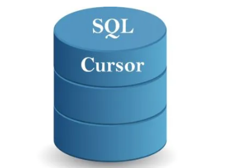 Fuente. https://www.techmixing.com/2011/07/cursor-in-sql-server.html |
La utilización de cursores en la programación de bases de datos es más común de lo que se cree. En este módulo se aborda el tema de cursores, su definición, implementación, ventajas y desventajas. |
Un cursor es un espacio en memoria RAM, dispuesto para almacenar las tuplas resultantes de un SELECT.
Cuando se necesita hacer una consulta, pero el resultado de dicha consulta se necesita para procesarlo, no para ver su resultado, se puede usar un cursor.
Vamos a mirar un ejemplo concreto para entender el concepto. Supongamos que se tiene una tabla con los datos de los libros de una librería, tal y como se muestra a continuación:
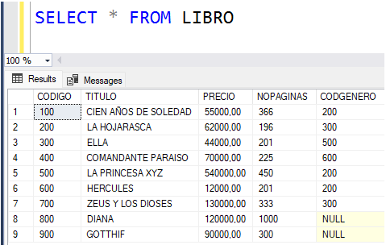
Supongamos que necesitamos aumentar el precio de los libros, en un 16%, que tengan un precio inferior a 100000 y que sean de género 200 o 300. Se debe advertir que este proceso se podría hacer de una manera más fácil (cómo sería?), pero se quiere mostrar cómo se hace utilizando cursores, con el fin de entender el concepto.
A continuación vamos a mirar, en detalle, el procedimiento almacenado que implementa este problema.
Al principio de la lógica, se declara un cursor llamado CURSOR1, y en la declaración se le asocia un SELECT. Las tuplas resultantes de dicho SELECT son las que se almacenan en el cursor. En este caso, al cursor llamado CURSOR1, se le asocia el codigo, precio y codigo de género de todos los libros.
Declarar un cursor significa reservar el espacio en memoria RAM que alojará el resultado del SELECT. Este espacio aun está vacío, es decir, el SELECT aún no se ejecuta.
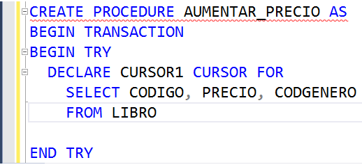
Después de declarar el cursor, se debe abrir (o activar) el cursor. Esto se hace con la instrucción OPEN. En esta instrucción el SELECT es ejecutado y su resultado es alojado en el espacio de la RAM reservado para ello.
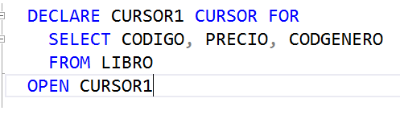
Para procesar los datos que hay dentro de un cursor, hay que recorrerlo. Un cursor se puede recorrer, leyendo tupla por tupla que hay en él. La instrucción para leer una tupla de un cursor es el FETCH. Es importante mencionar que cada vez que se lee una tupla de un cursor, los valores leidos deben llevarse a variables. Para este caso, la instrucción que seguría a continuación es la siguiente. En el FETCH se está leyendo la primera tupla almacenada en el cursor, el código, título y código de género del primer libro, y estos tres valores se almacenan en las variables @COD, @PRE y @CODG.
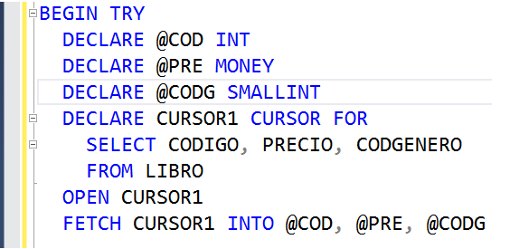
Después de leer la primera tupla, hay que procesarla según las necesidades. Es decir, al leer la primera tupla, hay que verificar si dicho libro cumple con las condiciones especificadas, es decir, si su precio es inferior a 100000 y su código de género es 200 o 300. Por lo tanto, hay que preguntar, con un IF, si la variable @PRE es menor que 1000000 y la variable @CODG es igual a 200 o 300.
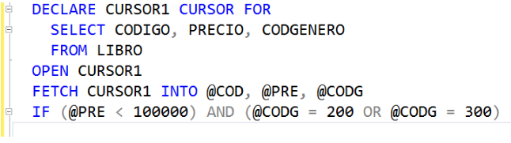
Si las condiciones del IF se cumplen, hay que incrementarle en un 16% el precio a ese libro. Cómo saber cuál libro es? El código del libro que hay que actualizarle el precio está en la variable @COD. Por eso, dentro del IF hay un UPDATE.
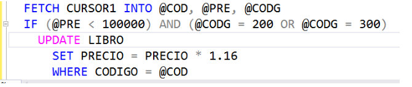
Luego de verificar si al primer libro leído hay que incrementarle el precio, hay que leer la siguiente tupla del cursor. Y con dicho libro recién leído, se debe hacer exactamente lo mismo que se explicó anteriormente. Es más, con cada tupla leída del cursor, se debe hacer lo mismo. Por lo tanto, se sugiere la presencia de un ciclo. Miremos a continuación cómo queda la lógica:
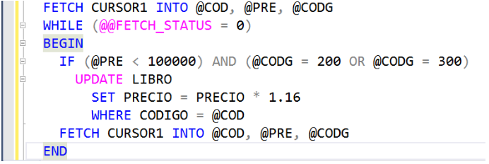
En la anterior lógica, el primer FETCH se ejecuta antes del WHILE. Es decir, se lee la primera tupla del cursor. Luego, la lógica entra al WHILE y pregunta por las condiciones dadas y hace el UPDATE si las cumple. Luego, antes de cerrar el WHILE (con el END), se lee la siguiente tupla del cursor. Con el END, la lógica sube de nuevo al WHILE a verificar la condición y si se cumple, vuelve y entra al ciclo para verificar las condiciones del libro recién leído.
Merece la pena explicar qué significa la condición que hay en el WHILE. En Transact SQL, cuando hay una palabra antecedida por doble @ (@@FETCH_STATUS), significa una variable interna de SQL Server (no una variable de usuario). SQL server internamente tiene muchas variables predefinidas que sirven para verificar ciertas situaciones. Una de esas variables se llama FETCH_STATUS. Dicha variable se comporta como un booleano, es decir, tiene dos posibles valores que nos interesa (en realidad, dicha variable tiene 4 posibles valores, pero hay dos que nos interesa). Los posibles valores de interés son los siguientes:
- 0: El último FETCH ejecutado fue exitoso, es decir, se pudo leer una tupla del cursor.
- Diferente de 0: El último FETCH falló. El fallo pudo ser por varias razones, pero lo importante es entender que si dicha variable no es 0, el último FETCH no pudo leer una tupla del cursor.
Entonces, siguiendo la explicación anterior y mirando la anterior lógica, vemos que el WHILE se ejecuta mientras el valor de FETCH_STATUS es igual a cero, es decir, mientras el último FETCH haya podido leer una tupla del cursor. Por eso, se debe poner la lectura de la primera tupla del cursor antes del WHILE, y al finalizar la lógica del WHILE se debe poner el siguiente FETCH.
Cuando la lógica se sale del WHILE es porque ya leyó todas las tuplas del cursor, es decir, ya leyó todas los libros. Es hora de cerrar (o deshabilitar) el cursor con la instrucción CLOSE. Como el CLOSE no borra físicamente el cursor de la RAM, a continuación se coloca la instrucción DEALLOCATE.
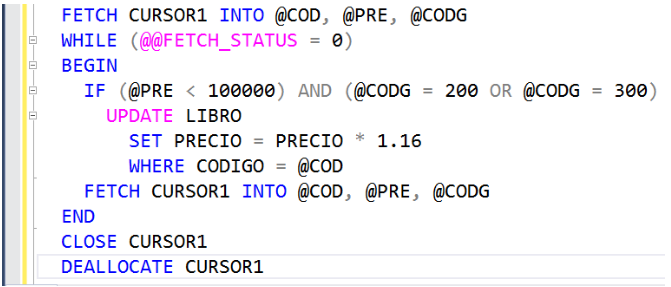
La lógica completa del procedimiento almacenado es la siguiente:
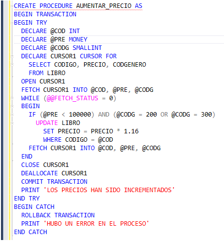
Mirando los datos, a los libros que hay que aumentarles el precio son a los de código 100, 200 y 600. Los demás deben quedar con el mismo precio que tienen.
Al ejecutar el procedimiento, efectivamente sucede lo anterior.
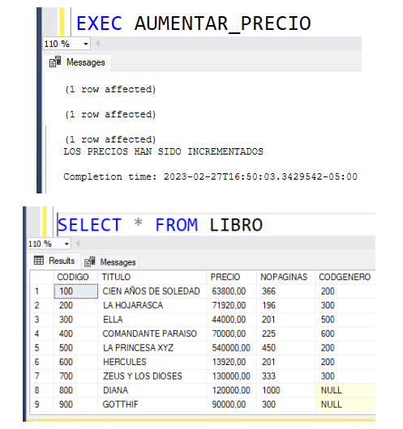
A manera de conclusión, cuando se va a implementar un cursor en la lógica de algún proceso, éste pasa por 5 estados:
- Declaración del cursor
- Abrir (activar) el cursor
- Procesar las tuplas del cursor
- Cerrar (desactivar) el cursor
- Borrar el contenido del cursor de la RAM
Como se puede observar en el ejemplo desarrollado en este módulo, el cursor se utilizó para almacenar temporalmente los datos de los libros. Este almacenamiento se hizo a través de un SELECT hecho sobre la tabla LIBRO. Y dentro del WHILE, cuya condición siempre será la misma en el caso de que se necesite recorrer todas las tuplas del cursor, se hace el procesamiento de cada una de las tuplas contenidas en el cursor. Al final, cuando ya no se necesita más, se cierra y borra el cursor.
Video: